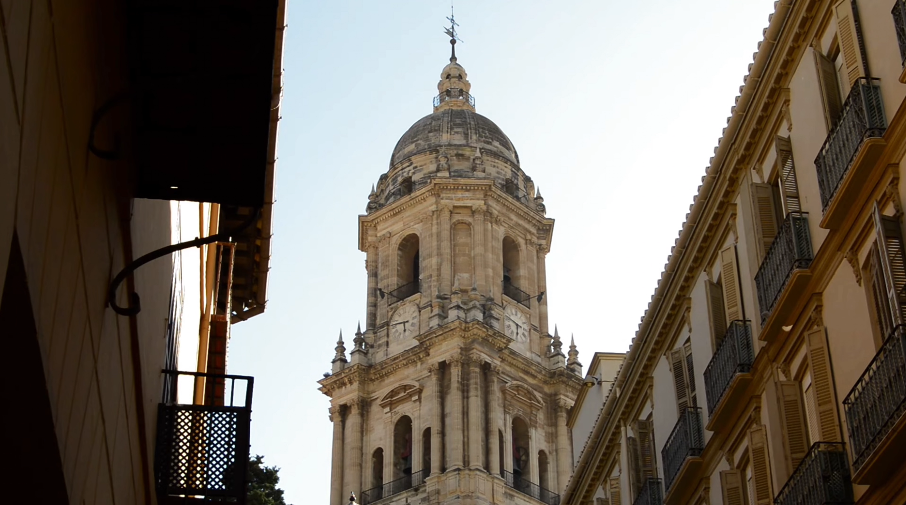
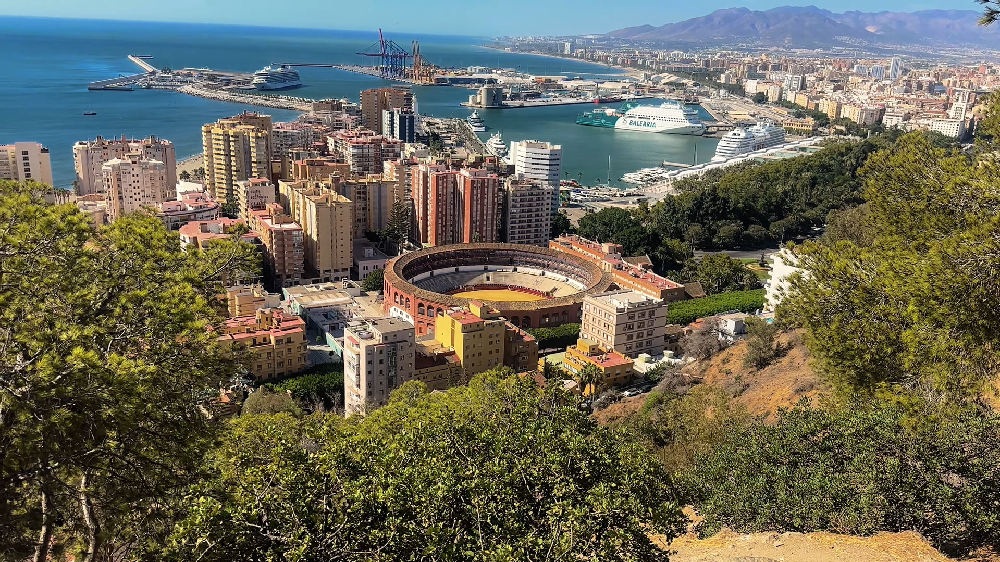
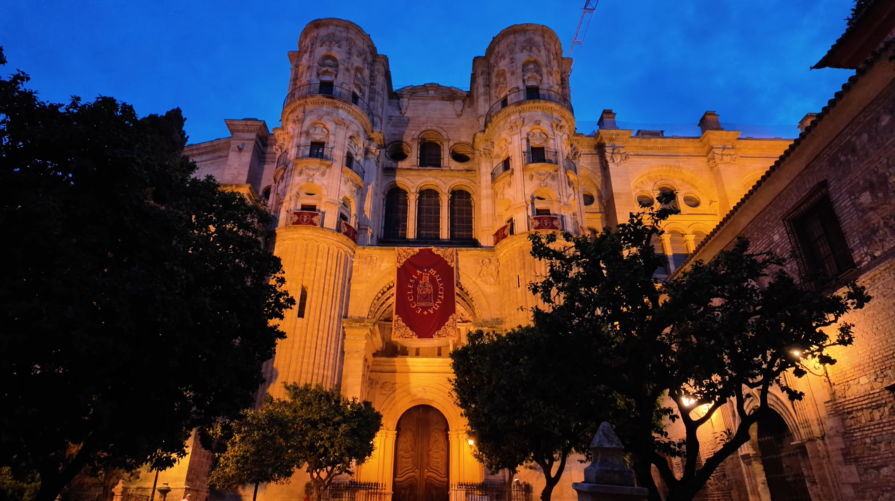
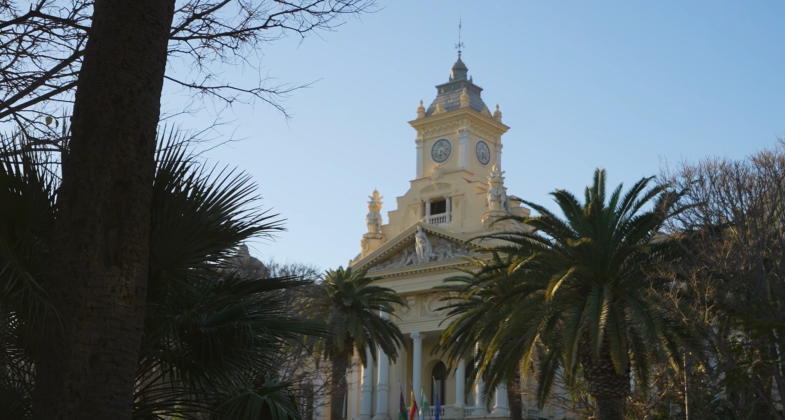
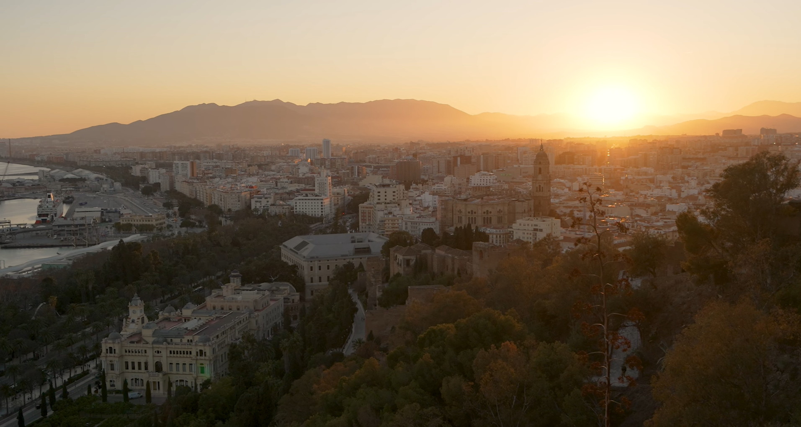
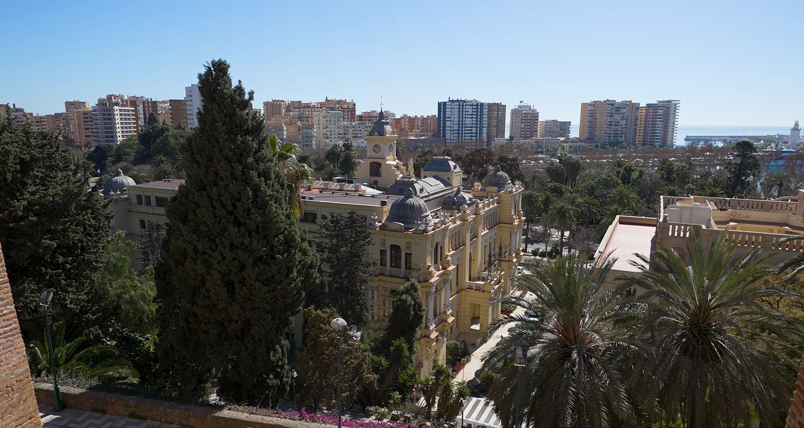
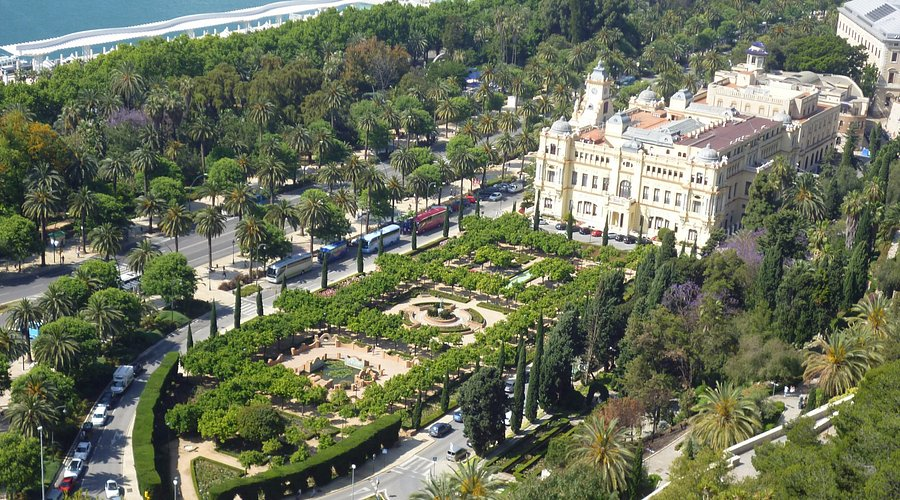
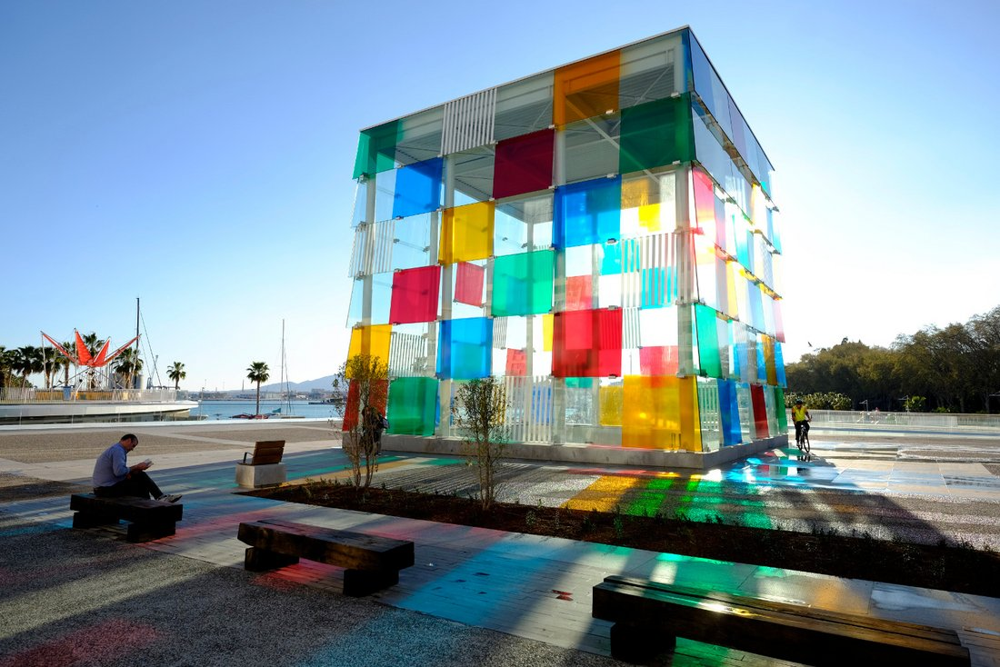
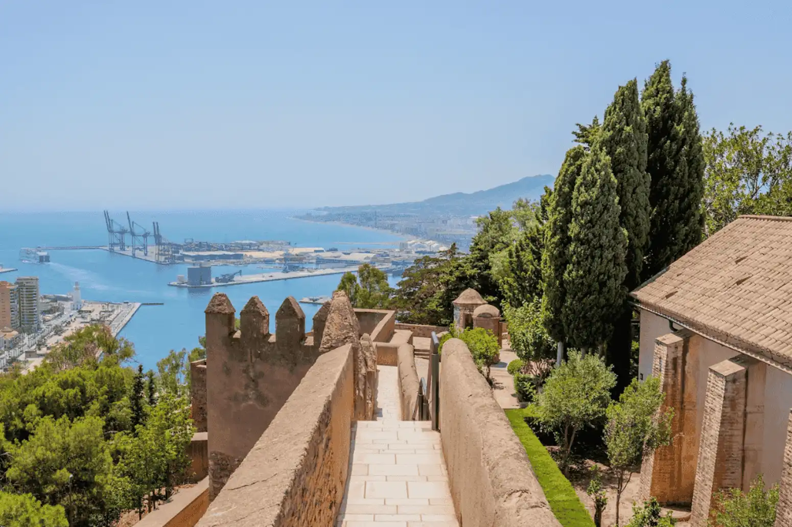

Not sure how to plan your visit? We have made three simple plans for you: 1 day, 2 days or 3 days in Málaga. Each plan shows what to see, where to eat and when to go, so you can enjoy the city without stress. Pick the one that fits your time and follow it step by step.



Start your day on Calle Larios, the main street of the old town. An e-bike tour is an easy and fun way to see many places in a short time.
Visit the Roman Theatre at the foot of the Alcazaba. It is almost 2,000 years old and it is right in the city center.
Walk inside the Cathedral to see its tall columns and beautiful ceilings.
Climb to the Alcazaba, the old Moorish fortress, and enjoy the gardens, the arches and the views over the port.
Walk to Muelle Uno, a modern promenade in the port with shops and restaurants. It is a nice place to have lunch by the sea.
After lunch, relax on La Malagueta beach. It is close to the port, so you can walk there.
End the day with a walk through the old town when the lights are on. Stop at a tapas bar and try a few small dishes.



Start your trip at Plaza de la Merced, a lively square in the old town. Pablo Picasso was born here, and the square is full of cafes where you can have a coffee before the day begins.
Visit the Roman Theatre at the foot of the Alcazaba. It is one of the oldest places in Málaga and it is right in the city center.
Climb to the Alcazaba, the old Moorish fortress, and enjoy the gardens, the arches and the views over the port.
Walk up to Gibralfaro Castle, just above the Alcazaba. The walk is steep, so wear comfortable shoes, but the views over the city and the sea are worth it.
Go back down to the old town and visit the Cathedral. Look at its tall columns and beautiful ceilings.
Spend some time at the beach. La Malagueta is close to the center, and you can also walk further east to Pedregalejo for a quieter day by the sea.
End your trip with a slow walk in the park next to the port. It is a green and relaxing place in the middle of the city.



Start your first day on Calle Marqués de Larios, the most famous street in Málaga. It is a wide, elegant street with shops and cafes, and it is a nice way to enter the old town.
Visit the Carmen Thyssen Museum, a small and beautiful museum in the old town. It shows Spanish art, especially paintings from Andalusia.
Walk inside the Cathedral to see its tall columns and beautiful ceilings. You can also climb to the roof for a great view of the city.
Start day two at the Roman Theatre, at the foot of the Alcazaba. It is one of the oldest places in Málaga and it is right in the city center.
Walk up through the Alcazaba, the old Moorish fortress. Take your time to enjoy the gardens, the arches and the views over the port.
Continue up to Gibralfaro Castle. The path is steep, so wear comfortable shoes, but the views over the city and the sea are the best in Málaga.
Start your last day with a slow walk in the park next to the port. It is a green and relaxing place in the middle of the city.
Visit the Centre Pompidou, a modern art museum in the port. You can easily recognize it by its colorful glass cube.
End your trip at La Malagueta beach. It is close to the port, so you can walk there and relax by the sea.